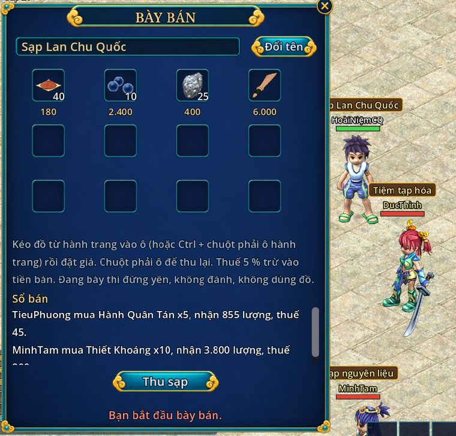

Bày sạp ở Chu Quốc
- Bản 5.0
- Từ cấp 20
- 12 ô hàng
- Thuế 5 %

- Mở sạp bằng kĩ năng cơ bản Bày Bán (Alt+R, tab Kĩ năng cơ bản, kéo ra ô phím được). Chỉ bày được ở khu sạp trong thành Chu, như bản gốc, cách sạp khác hơn 2 ô.
- Kéo đồ từ hành trang vào ô sạp (hoặc Ctrl + chuột phải ô hành trang), đặt giá mỗi cái từ 1 tới 50.000.000 lượng. Đồ chồng thì người mua mua lẻ được. Chuột phải ô sạp để thu về.
- Tên sạp mặc định "Tiệm tạp hóa", đổi được, tối đa 20 kí tự. Biển tên hiện trên đầu bạn, người khác bấm vào là xem sạp.
- Không bày được: đồ khoá, đồ phong ấn, set sư môn, đồ không cho giao dịch. Chưa bán được bảo thú.
- Đang bày thì đứng yên: không đi, không đánh, không dùng đồ, không giao dịch. Sạp tự đóng khi bấm Thu sạp, đổi bản đồ, bị dịch chuyển, trọng thương, thoát game hay mất mạng: không bán hộ khi bạn đã thoát game.
- Mỗi lần có người mua: dòng báo "X mua N món, nhận Y lượng, thuế Z". Sổ bán giữ 30 dòng gần nhất. Thuế 5 % trừ vào tiền bán.